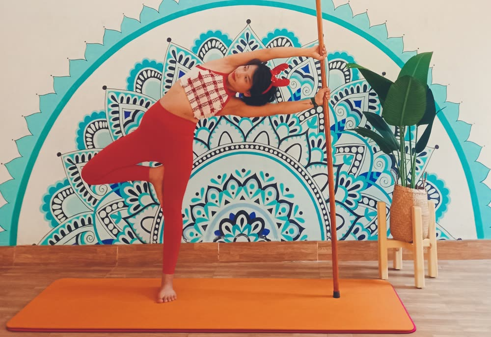

Yoga người lớn · Yoga và lối sống
Yoga cho đôi mắt sáng khỏe
Mắt nhìn cho mình cả ngày. Từ lúc mở mắt đến lúc tắt màn hình. Bài này là một lời mời nhỏ: cho đôi mắt được nghỉ, được nhìn xa, được chớp, được tối. Và chăm chúng bằng cả cách mình sống.
“Cô ơi, chiều nào em cũng thấy mắt như có cát.”
“Tối về nhìn chữ nó nhòe, mà sáng ra lại bình thường.”
Những câu này cô nghe nhiều nhất ở các bạn làm văn phòng, các cô giáo soạn bài trên máy, các mẹ trông con xong lại ôm điện thoại đến khuya.
Có một lần, giữa buổi tập, cô mời cả lớp ngồi yên, nhìn ra cửa sổ. Không làm gì cả. Chỉ nhìn hàng cây ở xa và thở.
Một bạn bảo: “Lâu lắm rồi em mới nhìn xa thế này.”
Cô nhớ câu ấy mãi.
Mỏi mắt, khô mắt khi nhìn màn hình nhiều giờ liền giờ đây rất phổ biến. Một tổng quan cho thấy khoảng một nửa hoặc hơn những người dùng máy tính có triệu chứng này (Sheppard và Wolffsohn, BMJ Open Ophthalmology, 2018). Nó thường không nguy hiểm. Nhưng nó là một lời nhắc. Mắt đang làm việc quá sức, và cả cơ thể phía sau đôi mắt cũng vậy.
Sophia không có bài tập nào làm hết cận thị hay bỏ được kính. Cô muốn nói thật điều ấy ngay từ đầu. Điều yoga làm được là giúp mắt bớt mỏi, bớt khô, giúp cổ vai và hơi thở thả lỏng, giúp mình sống chậm hơn một chút với màn hình. Bài này đi qua năm thể: thân, khí, tâm, trí, tinh thần. Bài tập mắt và tư thế là một phần. Phần lớn hơn nằm ở một ngày bình thường của mình.

- Tự nhìn lại
- Vì sao mắt mỏi
- Năm thể
- Một ngày cho đôi mắt
- Bài tập mắt
- Chuỗi 10 phút
- Glôcôm, bong võng mạc
- Khi nào gặp bác sĩ
Đôi mắt của mình dạo này thế nào?
Đánh dấu những điều đúng với mình. Đây không phải bài khám mắt. Chỉ là một lần dừng lại để để ý.
Vì sao nhìn màn hình lâu lại mỏi, lại khô
🔎
Nhìn gần là mắt đang làm việc
Để nhìn rõ chữ ở gần, một vòng cơ nhỏ trong mắt (cơ thể mi) phải co lại, hai mắt phải chụm vào nhau. Nhìn gần vài phút thì không sao. Nhìn gần tám tiếng liền, cơ ấy không được nghỉ. Mỏi là chuyện tự nhiên.
💧
Chớp mắt là tưới nước
Mỗi lần chớp, mí mắt rải một lớp nước mắt mỏng lên bề mặt nhãn cầu. Khi chăm chú vào màn hình, mình chớp ít hẳn, và nhiều lần chỉ chớp nửa chừng. Lớp nước ấy khô đi. Mắt cay, rát, nhòe.
🌬️
Mắt nối với cổ, vai và hơi thở
Người nhìn màn hình lâu thường rướn đầu ra trước, vai gồng, thở nông, có khi nín thở lúc đọc. Căng ở cổ gáy lại kéo theo đau đầu, nặng mắt. Thả lỏng mắt mà quên vai và hơi thở thì chưa đủ.
Có một con số cô hay kể ở lớp. Bình thường mình chớp mắt khoảng mười lăm đến hai mươi lần mỗi phút. Trong một nghiên cứu nhỏ, khi người ta chăm chú vào màn hình máy tính, số lần chớp giảm xuống chỉ còn vài lần mỗi phút (Patel và cộng sự, Optometry and Vision Science, 1991). Một nhóm ở Nhật cũng thấy điều tương tự, và thấy mắt mở to hơn khi nhìn màn hình đặt cao, nên bề mặt mắt bay hơi nhiều hơn (Tsubota và Nakamori, New England Journal of Medicine, 1993).
Đọc đến đây, cô thấy thương đôi mắt. Không phải mắt yếu. Chỉ là mình quên chớp.
Chăm đôi mắt trên cả năm thể
Theo yoga, con người có năm lớp nối với nhau: thân, khí, tâm, trí và tinh thần (đọc thêm bài Năm thể của con người). Đôi mắt nằm ở thân. Nhưng cách mình nhìn lại đổi theo tâm. Lo lắng thì mắt mở trừng, chân mày nhíu. Bình an thì mí mắt mềm, ánh nhìn rộng ra.
🌿 Thân
Ngủ đủ. Ăn rau xanh, củ quả có màu, cá, trứng. Uống đủ nước. Ngồi đúng chỗ, màn hình đúng tầm. Ra ngoài trời mỗi ngày. Đo huyết áp, đường huyết định kỳ, vì cả hai đều ảnh hưởng tới mắt.
🌬️ Khí
Để ý những lúc nín thở khi đọc, khi gõ phím. Thở ra một hơi dài. Thở chậm bằng mũi giúp hệ thần kinh dịu xuống, cơ mặt và cơ quanh mắt cũng thả theo.
💗 Tâm
Nhiều khi mắt mỏi vì mình căng chứ không vì chữ nhỏ. Thả chân mày. Thả hàm. Nhìn mềm thôi, không cần “dán” mắt vào màn hình.
🧠 Trí
Đổi cách nghĩ: nghỉ mắt không phải lười. Đặt nhắc giờ. Biết rằng bài tập mắt không thay kính, không thay thuốc nhỏ mắt bác sĩ kê. Khám mắt định kỳ là chăm sóc, không phải chuyện chỉ làm khi có bệnh.
✨ Tinh thần
Mỗi ngày dành một lúc nhìn trời, nhìn cây, nhìn mặt người thân thật lâu, không qua màn hình. Nghe thì nhỏ. Nhưng đôi mắt cũng cần được nhìn những thứ làm mình vui.
Đừng cố đổi tất cả cùng lúc. Chọn một điều. Làm cho đều một tuần. Rồi thêm điều khác.
Một ngày cho đôi mắt
Phần này cô thấy quan trọng hơn mọi bài tập. Mười phút tập mắt khó bù được mười tiếng nhìn màn hình không nghỉ. Dưới đây là một ngày Sophia hay gợi ý. Chọn hai điều dễ nhất trước.
- Khi vừa thức dậyChưa cầm điện thoại vội. Mở cửa, nhìn ra xa, nhìn cây, nhìn trời một lúc. Rửa mặt bằng nước mát. Năm hơi thở chậm.
- Buổi sáng ngoài trờiMười lăm, hai mươi phút ánh sáng ban ngày. Đi bộ, nhìn những thứ ở xa. Mắt người được làm ra để nhìn đường chân trời, không chỉ nhìn một khung chữ nhật cách mặt nửa mét.
- Chỗ ngồi làm việcMàn hình cách mắt khoảng một sải tay, mép trên ngang hoặc thấp hơn tầm mắt một chút. Chữ đủ to để không phải nheo. Đèn phòng đủ sáng, không có ánh cửa sổ chói ngay sau màn hình.
- Cứ hai mươi phútNhìn một vật xa chừng sáu mét, trong hai mươi giây. Chớp mắt vài lần. Mỗi tiếng thì đứng dậy hẳn, đi lại, lăn vai, thở năm hơi.
- Không khí quanh mìnhĐiều hòa, quạt không thổi thẳng vào mặt. Uống đủ nước. Phòng khô quá thì để một chậu nước hay máy tạo ẩm. Hút thuốc và khói thuốc làm mắt khô thêm.
- Bữa ănRau lá xanh đậm, củ quả màu vàng cam, trứng, cá. Đây là những gì cơ thể cần, mắt cũng cần. Cô không biết món nào ăn vào là “sáng mắt” ngay cả. Chỉ biết ăn đủ, ăn đều.
- Buổi tốiHạ độ sáng màn hình. Một tiếng trước khi ngủ, cất điện thoại ra xa giường. Thay bằng vài phút úp lòng bàn tay lên mắt, thở chậm.
- Giấc ngủBảy, tám tiếng. Đêm là lúc mắt được nhắm lâu nhất, lớp nước mắt được nghỉ, cơ mắt được thả. Thiếu ngủ thì sáng dậy mắt khô, đỏ, nặng. Ai cũng từng thấy.
Quy tắc 20 · 20 · 20
Cứ 20 phút nhìn gần, nhìn một vật xa khoảng 6 mét (20 feet) trong 20 giây. Các bác sĩ nhãn khoa hay khuyên như vậy. Bấm nút dưới đây, trang sẽ nhắc mình (để mở tab này trong lúc làm việc).
Đến giờ trang sẽ đổi chữ và đếm 20 giây cho mình nhìn xa.
Một thử nghiệm ở người dùng máy tính cho áp dụng quy tắc 20-20-20 trong hai tuần, có ứng dụng nhắc giờ. Triệu chứng mỏi mắt và khô mắt giảm. Nhưng khi thôi áp dụng thì lợi ích không giữ lại (Talens-Estarelles và cộng sự, Contact Lens and Anterior Eye, 2023). Nghĩa là cái hay nằm ở thói quen, không nằm ở một lần làm.
Kính lọc ánh sáng xanh thì sao? Một tổng quan Cochrane năm 2023 kết luận kính lọc ánh sáng xanh có lẽ không làm giảm mỏi mắt khi dùng máy tính so với kính thường (Singh và cộng sự, 2023). Còn với khô mắt, một thử nghiệm lớn cho uống dầu cá omega-3 suốt một năm thấy không hơn giả dược (nhóm DREAM, New England Journal of Medicine, 2018). Không có viên thuốc hay cặp kính nào thay được việc nghỉ mắt.
Còn ánh sáng ngoài trời, đây là điều cô mong các gia đình có con nhỏ đọc kỹ. Ở Trung Quốc, các trường được thêm bốn mươi phút ra ngoài trời mỗi ngày. Ba năm sau, tỉ lệ trẻ mới bị cận thị ở nhóm này khoảng 30%, so với khoảng 40% ở nhóm không thay đổi (He và cộng sự, JAMA, 2015). Các nhà nghiên cứu ước tính đến năm 2050, khoảng một nửa dân số thế giới sẽ bị cận thị (Holden và cộng sự, Ophthalmology, 2016). Người lớn mình ra ngoài trời, các con cũng theo ra.
Buổi tối thì sao? Một nghiên cứu cho người đọc sách trên máy đọc phát sáng trước khi ngủ, so với sách giấy. Họ buồn ngủ muộn hơn, cơ thể tiết ít melatonin hơn, sáng hôm sau kém tỉnh táo (Chang và cộng sự, PNAS, 2015). Giấc ngủ kém thì mắt hôm sau lại mỏi hơn. Một vòng tròn.
Những bài tập nhỏ cho đôi mắt
Mắt có sáu cơ nhỏ quanh nhãn cầu và một vòng cơ bên trong để điều tiết. Như mọi cơ khác, chúng thích được dùng đa dạng rồi được nghỉ. Thử ngay với chấm vàng dưới đây: giữ đầu yên, chỉ để mắt đi theo, thở chậm bằng mũi.
Mỗi bài khoảng 40 giây rồi tự dừng. Xong thì nhắm mắt, úp lòng bàn tay lên mắt vài hơi thở. Thấy chóng mặt, nhức mắt thì dừng.
Ai thích tập theo hình hơn thì có video dưới đây. Tám động tác nối liền nhau, khoảng hai phút: chớp mắt, nhìn lên xuống, trái phải, chéo, xoay vòng, gần xa, úp lòng bàn tay, rồi mở mắt nhìn xa. Mắt đi theo hơi thở. Lần đầu cứ xem một lượt cho quen, lần sau tập cùng.
Chớp mắt có ý thức
Mười lần chớp chậm
Chớp chậm, khép kín hẳn hai mi rồi mới mở. Mười lần. Rồi nhắm mắt hai giây. Lúc đầu nghe đơn giản quá. Nhưng với mắt khô vì màn hình, đây là việc cô thấy hữu ích nhất.
Úp lòng bàn tay
Palming
Xoa hai bàn tay cho ấm, khum lại, úp lên mắt. Không ấn. Mắt mở trong bóng tối cũng được, nhắm cũng được. Thở chậm một phút. Đây là lúc hiếm hoi trong ngày mắt không phải nhìn gì cả.
Nhìn gần, nhìn xa
Đổi tiêu điểm
Giơ ngón tay cái cách mặt khoảng ba mươi phân. Nhìn đầu ngón tay ba hơi thở. Rồi nhìn một vật thật xa ngoài cửa sổ ba hơi thở. Làm năm lượt. Cơ trong mắt được co rồi được thả.
Đưa mắt theo các hướng
Chuyển động nhãn cầu
Đầu giữ yên. Mắt nhìn lên, xuống, sang trái, sang phải, chéo góc, rồi vẽ vòng tròn thật chậm. Mỗi hướng một nhịp thở. Có công cụ chấm vàng bên trên để mắt đi theo.
Nhìn ngọn nến
Trataka nhẹ
Nhìn một điểm nhỏ hay ngọn nến cách khoảng một sải tay, chừng ba mươi giây, rồi nhắm mắt nhìn hình còn đọng lại. Phép này làm mình chớp ít đi, nên người khô mắt chỉ tập rất ngắn, xong thì chớp mắt nhiều lần.
Chườm ấm, xoa quanh hốc mắt
Chăm mí mắt
Khăn ấm vừa phải đặt lên mắt nhắm hai, ba phút. Rồi dùng đầu ngón tay ấn nhẹ dọc xương lông mày, xương gò má, quanh hốc mắt. Không chạm vào nhãn cầu. Rửa tay sạch trước khi làm.
Ở Ấn Độ, một nhóm sinh viên tập các bài vận động mắt trong yoga đều đặn vài tuần thì cảm giác mỏi mắt giảm so với nhóm không tập (Gupta và Aparna, International Journal of Yoga, 2020). Nghiên cứu nhỏ, chỉ đo cảm giác mỏi, không đo độ cận. Nhưng nó khớp với điều cô thấy ở lớp: mắt dễ chịu hơn khi được chuyển động và được nghỉ.

Chuỗi 10 phút cho mắt, cổ và vai
Chuỗi này dành cho giờ nghỉ trưa hoặc cuối ngày làm việc. Không có tư thế đầu thấp hơn tim. Ba thế đầu làm ngay trên ghế văn phòng được. Thở bằng mũi suốt chuỗi. Thấy đau, nhói, tê, chóng mặt thì dừng thế đó. Ai hay mỏi cổ vai gáy có thể đọc thêm bài Yoga cho dân văn phòng.
Ngồi thẳng, lăn vai1 phút
Sukhasana
Ngồi trên ghế hoặc trên thảm, hai chân vững. Hít vào, vai nhấc lên gần tai. Thở ra, vai lăn ra sau rồi thả xuống. Sáu lần. Rồi để hai tay nằm yên trên đùi, mắt nhìn ra xa một chút.
🌱 Đau vai thì lăn vòng nhỏ thôi. Không cần to.
Thả tai về vai30 giây mỗi bên
Nghiêng cổ
Ngồi thẳng. Thở ra, để tai phải thả nhẹ về phía vai phải. Vai trái nặng xuống. Thở năm hơi chậm. Nâng đầu về giữa rồi đổi bên. Mắt khép hờ, nhìn xuống.
🌱 Không kéo đầu bằng tay. Tê lan xuống cánh tay thì dừng.
Mèo và bò thật chậm1 phút
Marjaryasana, Bitilasana
Chống tay và gối. Hít vào võng lưng nhẹ, ngực mở ra, mắt nhìn hơi lên. Thở ra cong lưng, cằm về ngực, mắt nhìn về rốn. Mắt đi theo cột sống. Năm đến tám lần.
🌱 Người glôcôm làm biên độ nhỏ, đầu không thả thấp quá tim.
Vặn mình ngồi nhẹ30 giây mỗi bên
Ardha Matsyendrasana dễ
Ngồi duỗi chân, co gối phải, bàn chân đặt bên ngoài gối trái. Hít vào, lưng dài lên. Thở ra, vặn nhẹ sang phải. Mắt đi trước, đầu theo sau, nhìn qua vai một điểm thật xa. Rồi đổi bên.
🌱 Vặn từ ngực, không xoắn cổ. Ngồi trên ghế cũng làm được.
Tư thế em bé, trán trên gối1 đến 2 phút
Balasana có gối kê
Quỳ, ngồi về gót, ngả thân trước, trán đặt lên một chiếc gối cao. Hai tay xuôi theo thân. Trán có chỗ tựa thì vùng giữa hai chân mày tự giãn ra. Thở vào lưng.
🌱 Người glôcôm, cận thị nặng, từng bong võng mạc: kê gối thật cao để đầu ngang tim, hoặc thay bằng ngồi gục trán lên bàn.
Nằm, úp lòng bàn tay lên mắt3 đến 5 phút
Shavasana với Palming
Nằm ngửa, kê gối dưới khoeo. Xoa hai lòng bàn tay cho ấm, khum lại, úp lên hai mắt. Không ấn vào nhãn cầu. Để bóng tối và hơi ấm nằm yên đó. Thở chậm bằng mũi.
🌱 Ngồi làm cũng được: chống khuỷu tay lên bàn, lưng thẳng.
Thư giãn cho đôi mắt
Hai lòng bàn tay ấm úp lên mắt. Bóng tối mềm.
Thả chân mày. Thả vùng giữa hai mắt. Thả thái dương.
Hai nhãn cầu như chìm nhẹ về phía sau, nằm yên trong hốc mắt.
Hít vào chậm bằng mũi. Thở ra dài hơn một chút.
Thầm cảm ơn đôi mắt. Chúng đã cho mình thấy mặt con, thấy trời, thấy biết bao điều đẹp.
Hạ tay xuống. Mở mắt thật chậm. Nhìn ra xa trước.
Thử hít vào bốn nhịp, thở ra sáu nhịp trong lúc úp tay lên mắt. Bóng vàng dưới đây dẫn nhịp cho mình.
Thấy hụt hơi thì quay về thở tự nhiên. Không cần cố.
Thở chậm, dưới khoảng mười nhịp mỗi phút, đi cùng tăng hoạt động của hệ phó giao cảm, phần thần kinh lo việc nghỉ ngơi và hồi phục (Zaccaro và cộng sự, Frontiers in Human Neuroscience, 2018). Cũng có thể đọc thêm bài Hơi thở bốn thì và mục Các phép thở trong Yoga.
Người glôcôm, cận thị nặng, từng bong võng mạc
Đây là phần cô mong người hướng dẫn yoga nào cũng biết. Khi đầu thấp hơn tim, áp lực trong mắt tăng lên.
Một nghiên cứu cho người tập yoga, cả người mắt bình thường và người bị glôcôm, vào bốn tư thế đầu thấp: chó úp mặt, gập người đứng, cái cày và chân gác tường. Nhãn áp tăng ở cả bốn, nhiều nhất ở chó úp mặt. Ngồi dậy một lúc thì nhãn áp gần về như cũ (Jasien và cộng sự, PLoS One, 2015). Với tư thế trồng chuối đầu, một nghiên cứu khác đo được nhãn áp tăng gần gấp đôi trong lúc giữ thế (Baskaran và cộng sự, Ophthalmology, 2006).
Với người mắt khỏe, tăng ngắn như vậy thường không sao. Nhưng với người bị glôcôm, dây thần kinh thị giác đã yếu sẵn. Nên cô thường làm thế này:
- Glôcôm (tăng nhãn áp)Bỏ các thế đảo ngược: trồng chuối đầu, trồng chuối vai, cái cày. Hạn chế chó úp mặt, gập người sâu, đầu luôn ngang hoặc cao hơn tim. Không nín thở rặn sức. Không tập Kapalabhati, Bhastrika. Vẫn dùng thuốc nhỏ mắt đúng như bác sĩ dặn.
- Cận thị nặng, từng bong hoặc rách võng mạcTránh tư thế đảo ngược, cú nhảy mạnh, động tác giật đầu. Hỏi bác sĩ mắt trước khi tập trở lại.
- Mới mổ mắtĐục thủy tinh thể, mổ cận, mổ võng mạc: chờ bác sĩ cho phép mới tập, nhất là các thế cúi đầu và phép thở mạnh. Không dụi mắt, không để mồ hôi chảy vào mắt.
- Đeo kính áp tròngKhô mắt nhiều thì tháo kính khi tập thư giãn, úp lòng bàn tay. Đừng đeo kính áp tròng ngủ trưa.
Có một câu cô hay nói với học viên: yoga có hàng trăm tư thế. Bỏ đi vài thế cho đôi mắt an toàn, mình chẳng mất gì cả.
Khi nào nên gặp bác sĩ
Nghỉ mắt, sống cân bằng, tập nhẹ nhàng giúp đôi mắt dễ chịu hơn. Nhưng chúng không thay cho khám và điều trị nhãn khoa. Cô luôn mong mọi người đi khám khi:
- Mắt mờ đột ngột, mất một phần thị trường, thấy một “tấm màn” che một góc nhìn: đi cấp cứu mắt ngay trong ngày.
- Chớp sáng lóe lên, hoặc bỗng thấy rất nhiều đốm đen, sợi đen trôi: có thể là dấu hiệu rách hoặc bong võng mạc, cần khám ngay.
- Đau nhức mắt dữ dội, mắt đỏ, nhìn đèn thấy quầng xanh đỏ, kèm đau đầu, buồn nôn: có thể là cơn glôcôm cấp, đi cấp cứu.
- Nhìn một thành hai đột ngột, méo miệng, yếu tay chân, nói khó: gọi 115 ngay.
- Mắt đỏ, có ghèn, đau, sợ ánh sáng, hoặc bị hóa chất, vật lạ bắn vào mắt.
- Khô mắt, mỏi mắt kéo dài vài tuần dù đã nghỉ mắt và đổi thói quen. Có thể cần đo lại kính hoặc khám khô mắt.
Khám mắt định kỳ: các hiệp hội nhãn khoa khuyên người lớn nên khám mắt toàn diện từ khoảng 40 tuổi, sớm hơn nếu có bệnh. Người có đái tháo đường nên soi đáy mắt mỗi năm. Người cao huyết áp, có người nhà bị glôcôm, cận thị nặng thì hỏi bác sĩ lịch khám phù hợp. Glôcôm thường không đau và không có dấu hiệu sớm. Chỉ đo nhãn áp và khám mới phát hiện được.
Lời nhỏ cuối bài
Trong yoga có một hình ảnh cô rất thích: thu các giác quan về bên trong, như con rùa rụt chân tay vào mai. Người xưa gọi là Pratyahara.
Mình không cần đi xa đến thế. Chỉ cần thỉnh thoảng nhắm mắt lại giữa ngày. Không nhìn gì. Không đọc gì.
Đôi mắt sẽ biết ơn.
Rồi khi mở mắt ra, nhìn xa một chút. Nhìn trời. Nhìn người mình thương.
🍃 Muốn có người cùng tập chậm, đúng và an toàn cho cả đôi mắt?
Sophia Yoga có lớp người lớn trực tiếp, lớp Zoom và lớp kèm 1 kèm 1, chú trọng hơi thở và thư giãn, điều chỉnh tư thế cho người có bệnh về mắt. Ai muốn dạy các con thói quen ra ngoài trời, nghỉ mắt từ nhỏ, có khóa đào tạo HLV Yoga trẻ em.
Tài liệu tham khảo
- Sheppard A.L., Wolffsohn J.S. (2018). Digital eye strain: prevalence, measurement and amelioration. BMJ Open Ophthalmology, 3(1).
- Patel S., Henderson R., Bradley L., Galloway B., Hunter L. (1991). Effect of visual display unit use on blink rate and tear stability. Optometry and Vision Science, 68(11).
- Tsubota K., Nakamori K. (1993). Dry eyes and video display terminals. New England Journal of Medicine, 328(8).
- Talens-Estarelles C. và cộng sự (2023). The effects of breaks on digital eye strain, dry eye and binocular vision: testing the 20-20-20 rule. Contact Lens and Anterior Eye, 46(2).
- Singh S. và cộng sự (2023). Blue-light filtering spectacles for children and adults. Cochrane Database of Systematic Reviews, CD013244.
- Dry Eye Assessment and Management Study Research Group (2018). n-3 fatty acid supplementation for the treatment of dry eye disease. New England Journal of Medicine, 378(18).
- He M. và cộng sự (2015). Effect of time spent outdoors at school on the development of myopia among children in China: a randomized clinical trial. JAMA, 314(11).
- Holden B.A. và cộng sự (2016). Global prevalence of myopia and high myopia and temporal trends from 2000 through 2050. Ophthalmology, 123(5).
- Chang A.M., Aeschbach D., Duffy J.F., Czeisler C.A. (2015). Evening use of light-emitting eReaders negatively affects sleep, circadian timing, and next-morning alertness. PNAS, 112(4).
- Gupta S.K., Aparna S. (2020). Effect of yoga ocular exercises on eye fatigue. International Journal of Yoga, 13(1).
- Zaccaro A. và cộng sự (2018). How breath-control can change your life: a systematic review on psycho-physiological correlates of slow breathing. Frontiers in Human Neuroscience, 12.
- Jasien J.V., Jonas J.B., de Moraes C.G., Ritch R. (2015). Intraocular pressure rise in subjects with and without glaucoma during four common yoga positions. PLoS One, 10(12).
- Baskaran M. và cộng sự (2006). Intraocular pressure changes and ocular biometry during Sirsasana (headstand posture) in yoga practitioners. Ophthalmology, 113(8).
Hình minh họa tư thế do Sophia Yoga tự vẽ. Những câu nói trong bài là điều cô hay nghe ở lớp, không nêu tên học viên. Bài viết chia sẻ kiến thức và kinh nghiệm tập luyện, không thay cho lời khuyên của bác sĩ nhãn khoa.